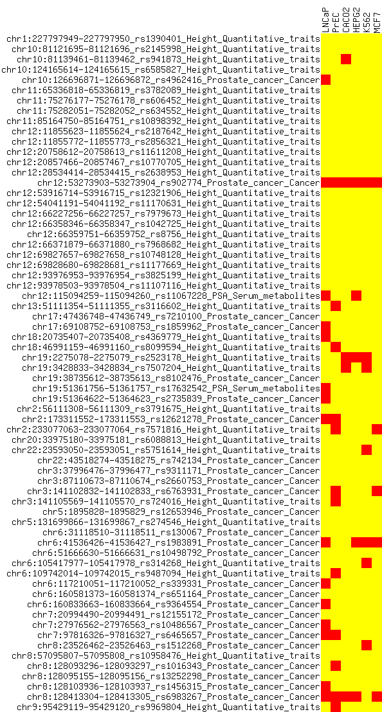
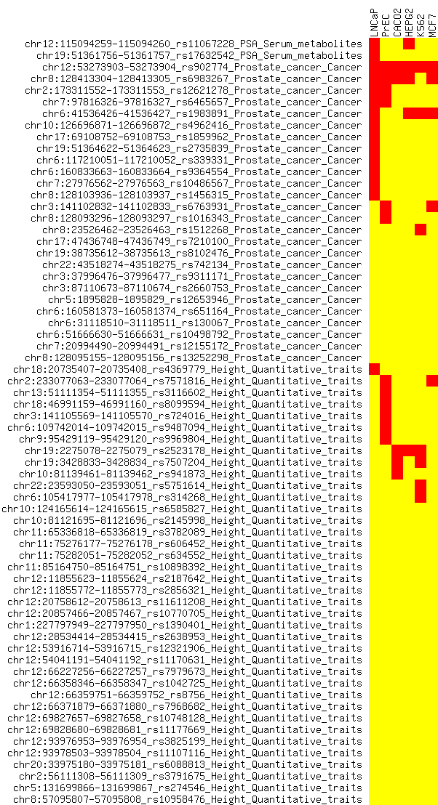

4.1. Visualizing the relationship of SNPs and generic genomic features¶
We want to visualize how genome-wide association study single nucleotide repeats (GWAS SNPs) relate to other genomic features—in this case, these features are DNaseI-hypersensitive sites (DHSs). We could, instead, look at methylated regions, CpG islands, coding sequence or other genomic features. Normally, we might do this for all sites in the genome, but to reduce the file sizes we only look at a subset of data here and we have taken a subset of the real data for the purposes of demonstration.
Roughly speaking, we considered two classes of SNPs: those which are prostate-related (associated with PSA and prostate cancer) and some not (height). We have some BED files with positions of DNaseI-hypersensitive sites for various tissues: two from prostate (LNCaP and PrEC), the rest from other tissues (CACO2, HEPG2, K562, MCF7).
We will use BEDOPS tools to generate per-tissue DHS counts associated with our SNPs, using matrix2png to visualize results as a heatmap.
4.1.1. BEDOPS tools in use¶
For this example, we use sort-bed to sort the input SNP data, and bedmap to count the number of single-base or greater overlaps between a SNP and a tissue-specific DHS. A modified version of this script uses loops and other shell features.
4.1.2. Script¶
#!/bin/tcsh -efx
sort-bed GWAS_SNPs.bed > GWAS_SNPs.sorted.bed
bedmap --ec --delim "\t" --bp-ovr 1 --echo --count GWAS_SNPs.sorted.bed LNCaP_DHS.bed > SNP_DHS_matrix.bed
# add PrEC DHS overlap counts to matrix
bedmap --ec --delim "\t" --bp-ovr 1 --count GWAS_SNPs.sorted.bed PrEC_DHS.bed > counts.txt
paste SNP_DHS_matrix.bed counts.txt > new_SNP_DHS_matrix.bed
mv new_SNP_DHS_matrix.bed SNP_DHS_matrix.bed
# add CACO2 DHS overlap counts to matrix
bedmap --ec --delim "\t" --bp-ovr 1 --count GWAS_SNPs.sorted.bed CACO2_DHS.bed > counts.txt
paste SNP_DHS_matrix.bed counts.txt > new_SNP_DHS_matrix.bed
mv new_SNP_DHS_matrix.bed SNP_DHS_matrix.bed
# add HEPG2 DHS overlap counts to matrix
bedmap --ec --delim "\t" --bp-ovr 1 --count GWAS_SNPs.sorted.bed HEPG2_DHS.bed > counts.txt
paste SNP_DHS_matrix.bed counts.txt > new_SNP_DHS_matrix.bed
mv new_SNP_DHS_matrix.bed SNP_DHS_matrix.bed
# add K562 DHS overlap counts to matrix
bedmap --ec --delim "\t" --bp-ovr 1 --count GWAS_SNPs.sorted.bed K562_DHS.bed > counts.txt
paste SNP_DHS_matrix.bed counts.txt > new_SNP_DHS_matrix.bed
mv new_SNP_DHS_matrix.bed SNP_DHS_matrix.bed
# add MCF7 DHS overlap counts to matrix
bedmap --ec --delim "\t" --bp-ovr 1 --count GWAS_SNPs.sorted.bed MCF7_DHS.bed > counts.txt
paste SNP_DHS_matrix.bed counts.txt > new_SNP_DHS_matrix.bed
mv new_SNP_DHS_matrix.bed SNP_DHS_matrix.bed
# cleanup and sort by disease trait
rm counts.txt
sort -k5d SNP_DHS_matrix.bed > new_SNP_DHS_matrix.bed
mv new_SNP_DHS_matrix.bed SNP_DHS_matrix.bed
# condense data fields into matrix2png form
awk '{print $1":"$2"-"$3"_"$4"_"$5"_"$6"\t"$7"\t"$8"\t"$9"\t"$10"\t"$11"\t"$12}' SNP_DHS_matrix.bed > new_SNP_DHS_matrix.txt
mv new_SNP_DHS_matrix.txt SNP_DHS_matrix.txt
# add header
echo -e "0\tLNCaP\tPrEC\tCACO\tHEPG2\tK562\tMCF7" | cat - SNP_DHS_matrix.txt > new_SNP_DHS_matrix.txt
mv new_SNP_DHS_matrix.txt SNP_DHS_matrix.txt
# make heatmap
matrix2png -r -c -g -size 16:16 -mincolor yellow -midcolor black -maxcolor red -data SNP_DHS_matrix.txt > SNP_DHS_matrix.png
4.1.3. Discussion¶
Each use of bedmap is identical: the options --ec --delim "\t" --bp-ovr 1 --count add several settings:
- Error checking/correction (
--ec) - Use of the tab character as a custom field delimiter (
--delim "\t") to make results easier to parse withawkfurther downstream - Manual specification of a single base-pair criteria for overlap (
--bp-ovr 1, although this is the default) - Using
--count, counting the number of mapping elements (DHSs) which overlap a reference instance (a given SNP)
These results are calculated for each of the seven cell types and collated into matrix form to run through matrix2png. We show it here to give an idea of what kind of data bedmap generates, to help create these quantitative visualizations:
{kind=link}
Rows are presented in sort-bed order. Cells in red show greatest relative number of counts, while yellow shows the least. Examining this heatmap, DHS elements appear to associate with prostate disease-related GWAS SNPs.
To make this clearer, here is the same result, with rows sorted by disease name:
{kind=link}
While there are some DHSs associated with non-disease SNPs, the majority accumulate with the prostate SNPs.
4.1.4. Downloads¶
- The
examplescript, after modification to use loops and other shell features. Datafor this example are contained in a tarball (usetar -xzfto extract files).
The bedmap tool can operate directly on Starch-formatted archives. Alternatively, use the unstarch tool to decompress Starch data files to sorted BED format.
Note that these are not the full datasets that went into the original research, but snippets that should otherwise demonstrate the disease-DHS association phenomenon and the use of parts of the BEDOPS toolset.